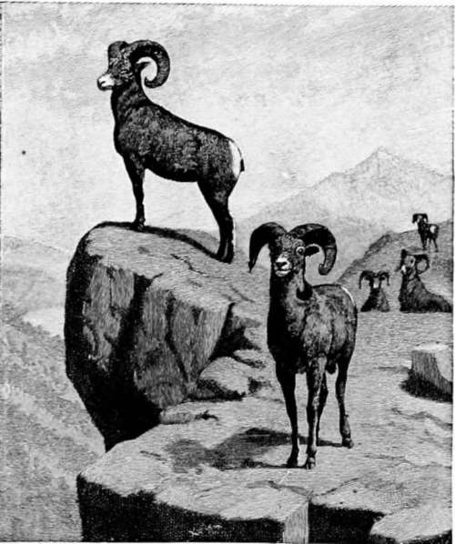

Hunting American Big Game
Description
This section is from the book "Hunting", by Archibald Rogers. Also available from Amazon: Hunting.
Hunting American Big Game
SOME eight or ten years ago * it was by no means difficult for one who knew where to go and how to hunt to get excellent shooting in Northwestern Wyoming. Large game was there moderately abundant, with the exception of buffalo. The latter had just been exterminated ; but, bleaching in the sun, the ghastly evidences of man's sordid and selfish policy lay exposed at every step.
* This article was prepared in the latter part of 1891.
Indian troubles of a very formidable character did a great deal toward keeping the game intact in this portion of the country, by keeping the white man out; and while other parts of Wyoming grew, and towns sprang up with rapid growth, to become in an incredibly short time cities, involving in destruction, as the past sad history shows, the wild animals in their vicinity, this Northwestern portion remained unsettled, and acted as an asylum to receive within its rocky mountain ranges and vast sheltering forests the scattering bands of elk and deer fleeing from annihilation and the encroaching haunts of men. As soon as it was safe, then, and in some instances unquestionably before, cattlemen, not inaptly styled pioneers of civilization, began to drift down along the valley of the Big Horn ; and, like the patriarchs of old, "brought their flocks with them," settling here and there, wherever they could find advantageous sites for their ranches.
And now, as I propose to give some hunting experiences of those days, if you will accompany me to Billings, on the Northern Pacific Railway, the nearest town to my ranch, and the Mecca to which the devout cattleman drives his wagon for supplies, I will introduce you to the foot-hills and mountains, and some of the adventures therein.
After four days on a sleeping-car, it is a delightful release to tumble out on a frosty September morning, and being guided to where the ranch wagon and crew are bivouacked just outside the limits of the rapidly growing town, to get one's breakfast on terra-firma. No time is now to be wasted. The mules are hitched up; the little band of horses are rounded together; and when we have jumped into our saddles, the cook, who always handles the reins, gives a crack of his whip, and we take our departure from civilization. A couple of miles take us to a primitive wire-rope ferry, where we cross the Yellowstone River, which at this season of the year is low and clear; in a few minutes we are over, and, ascending the bluffs on the other side, take our last look at the beautiful valley we are leaving behind.
By night we reach Pryor Creek, where picking out as good a camping-place as possible, the mules are soon unhitched, and, with the horses, turned loose to graze. While the cook is preparing the evening meal I bag a few prairie chickens, to give variety to the fare. Breakfasting at daylight the next morning, we are soon under way again, with Pryor Mountains in the distance as our goal for this day's journey. Toward evening the white tepees of an Indian camp are visible, clustered in a picturesque group close to Pryor Mountains. Passing them, not without paying a slight tribute in the way of tobacco and such other gifts as our copper-colored friends generally demand, we fairly enter Pryor Gap; and there, in a delightful amphitheatre, we again make camp. This evening we must have trout for supper; so all hands go to work, and we are soon rewarded with a fine mess of trout from the head waters of Pryor Creek.
The next day, as we reach the summit of the Gap, one of the most beautiful views in the country opens out. The great main range of the Rocky Mountains stretches before us, its rugged snow-capped peaks glistening in the morning sun, and we long to be there; but many a long mile still intervenes, and forty-four miles of desert have to be crossed to-day. This is always an arduous undertaking. It is monotonous in the extreme, and men and animals are sure to suffer for want of good water; for after leaving Sage Creek on the other side of the Gap, there is no water to be had until Stinking Water River * is reached. But all things must have an end; and at last, late in the evening, we find ourselves encamped on the banks of that stream, beautiful despite its unfortunate name.
Two fine Rams.
Fording the river the next morning, not a very terrifying operation in its present low stage, we climb the steep bank, and soon begin our long ascent of the divide that separates us from our ranch and Grey-bull River. Accompanied by an immense amount of expletives and very bad language, the mules are finally induced to gain the summit. Here even the most casual observer could not fail to be impressed with the magnificent and apparently indefinite expanse of mountain scenery that, turn which way he will, meets his view. However, we have no time to linger; and picking our way among the countless buffalo wallows which indent the level surface of the summit, the wagon, with its wheels double-locked, is soon groaning and creaking down the descent which leads to the merrily rushing Mee-teetse, following down which to its junction with Greybull, we are soon inside our own fence, and are joyously welcomed by the dogs. Here, too, I find my trusty friend and companion of all my hunting trips, Tazwell Woody, a grizzled veteran of the mountains, who once long ago claimed Missouri as his home. From the ranch to the mountains is a comparatively short trip, for one day's travel to the westward would place you well up on their slopes.
* Bancroft, in his account of the early explorations of Wyoming, refers to this river as follows : "It is a slander to use this non-descriptive name for an inoffensive stream. The early trappers took it from the Indians, who, in their peculiar fashion, called it 'the river that ran by the stinking water,' referring to bad-smelling hot springs on its banks."
Let me say of this portion of the range, that it is the most rugged, broken, and precipitous of its whole extent; and the charm of overcoming its apparent inaccessibility can only be appreciated by one who has toiled and sweated in surmounting the difficulties of mountain travel from a pure love of nature in its wildest and grandest form.
Continue to: